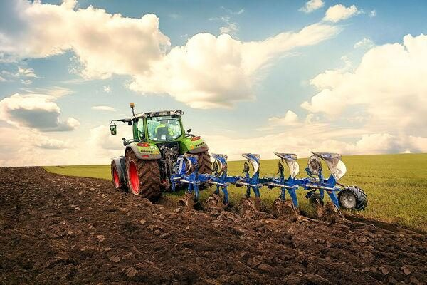
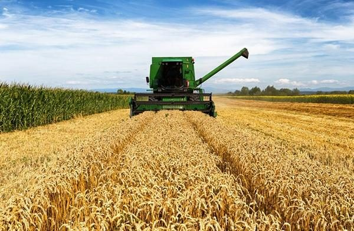
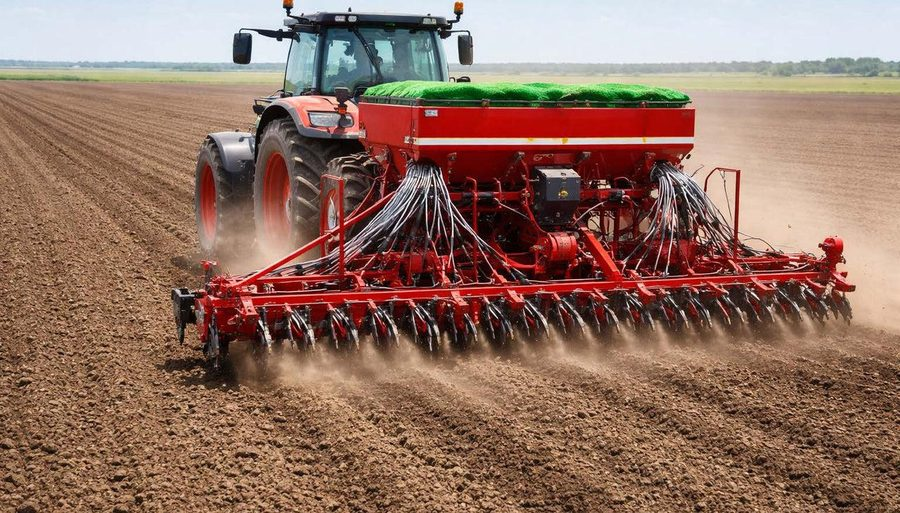
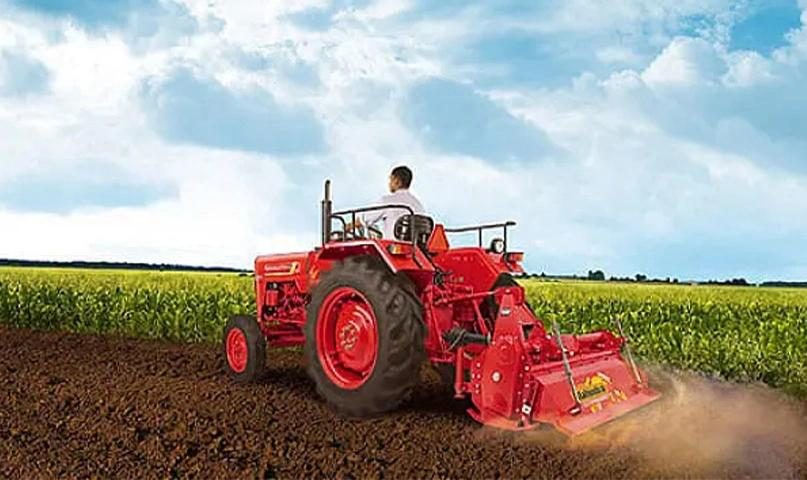
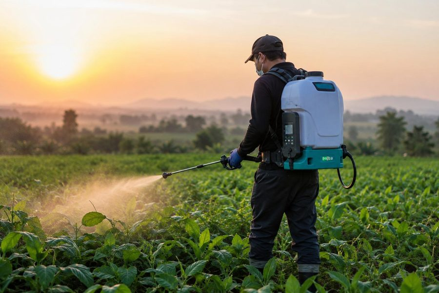
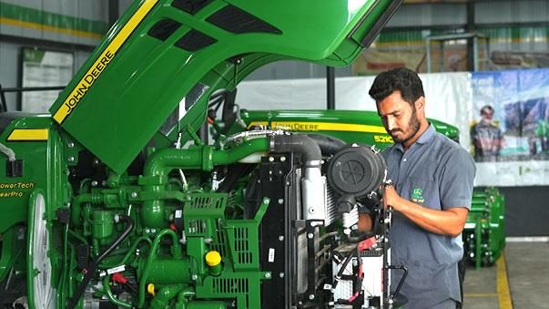

MODERN AGRICULTURAL EQUIPMENT
Smart Machinery for Smarter Farming
Discover modern farming equipment and advanced agricultural technology designed to improve productivity and make farming more efficient.
Explore EquipmentMachinery
Explore Modern Farming Equipment
The machines that make everyday farm work faster and easier.

Modern Tractors
Powerful tractors for ploughing, transportation and daily farming activities.

Harvesting Machines
Modern harvesters for faster and more efficient crop harvesting.

Seed Drills
Equipment for accurate seed placement and uniform sowing.

Rotavators
Prepare soil efficiently for better crop cultivation.

Irrigation Systems
Smart irrigation solutions for efficient water management.

Spraying Equipment
Modern sprayers for convenient crop protection and maintenance.
Benefits
Benefits of Modern Agricultural Equipment
Save Time
Complete farming operations faster.
Improve Productivity
Improve efficiency in agricultural activities.
Reduce Manual Work
Make demanding farm tasks easier.
Smart Farming
Adopt modern agricultural practices.
Buying Guide
How to Choose the Right Equipment?
Understand Your Needs
Identify your farming requirements.
Check Your Budget
Compare equipment costs and available financing.
Compare Features
Evaluate capacity, performance and maintenance.
Choose the Right Machine
Select equipment suitable for your land and crops.

Care & Safety
Equipment Maintenance Tips
- Check engine oil regularly.
- Maintain tyre pressure.
- Clean machinery after use.
- Inspect equipment before operation.
- Follow manufacturer maintenance schedules.
Upgrade Your Farming with Modern Technology
Explore modern agricultural equipment and discover smarter ways to manage your farm.
Explore Modern Equipment